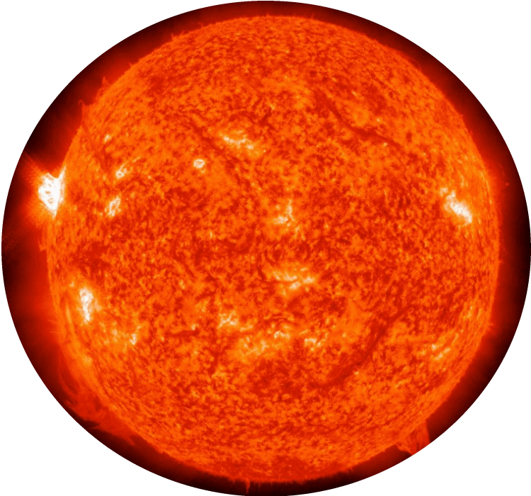
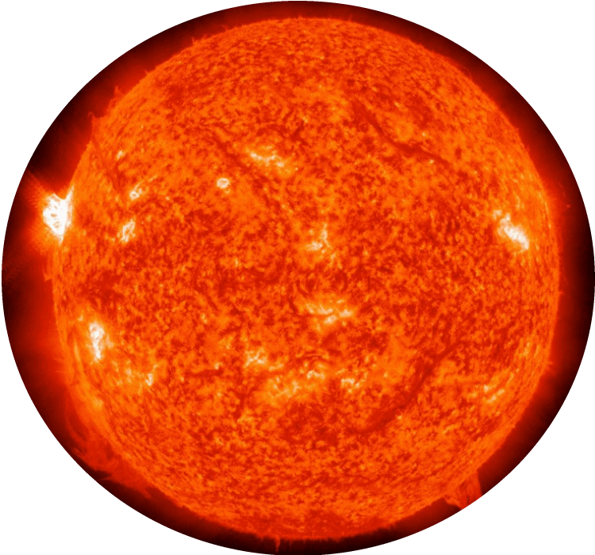
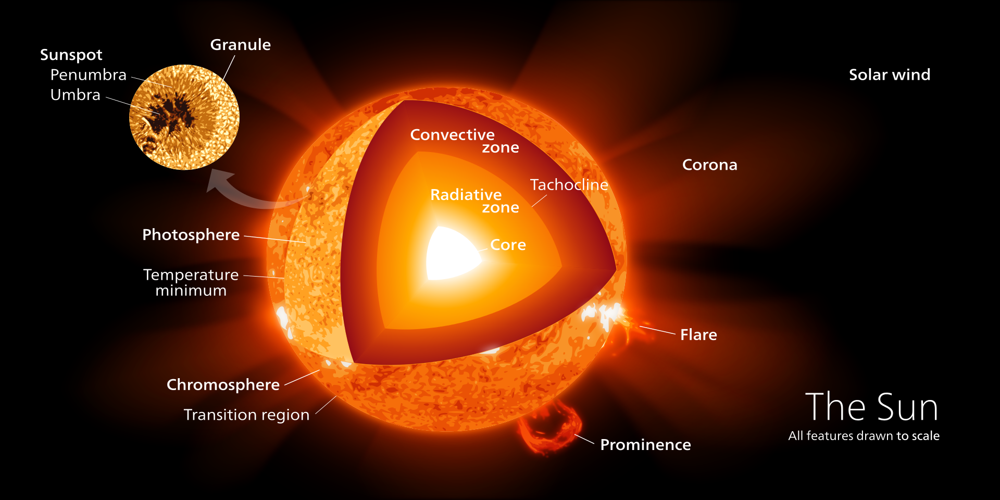

Welcome to the SUN!
|  |
| Sun Profile: |
| Age: 4.6 Billion Years |
| Type: Yellow Dwarf (G2V) |
| Diameter: 1,392,684 km |
| Equatorial Circumference 4,370,005.6 km |
| Mass: 1.99 × 10^30 kg (333,060 Earths) |
| Surface Temperature: 5,500 °C |

|  |
| Sun Profile: |
| Age: 4.6 Billion Years |
| Type: Yellow Dwarf (G2V) |
| Diameter: 1,392,684 km |
| Equatorial Circumference 4,370,005.6 km |
| Mass: 1.99 × 10^30 kg (333,060 Earths) |
| Surface Temperature: 5,500 °C |
The Sun is the star at the center of the Solar System and is by far the most important source of energy for life on Earth. It is a nearly perfect sphere of hot plasma, with internal convective motion that generates a magnetic field via a dynamo process. Its diameter is about 109 times that of Earth, and its mass is about 330,000 times that of Earth, accounting for about 99.86% of the total mass of the Solar System. About three quarters of the Sun's mass consists of hydrogen; the rest is mostly helium, with much smaller quantities of heavier elements, including oxygen, carbon, neon and iron.
The Sun is a G-type main-sequence star (G2V) based on spectral class and it is informally referred to as a yellow dwarf. It formed approximately 4.6 billion years ago from the gravitational collapse of matter within a region of a large molecular cloud. Most of this matter gathered in the center, whereas the rest flattened into an orbiting disk that became the Solar System. The central mass became increasingly hot and dense, eventually initiating nuclear fusion in its core. It is thought that almost all stars form by this process.
The solar constant is the amount of power that the Sun deposits per unit area that is directly exposed to sunlight. The solar constant is equal to approximately 1,368 W/m2 (watts per square meter) at a distance of one astronomical unit (AU) from the Sun (that is, on or near Earth). Sunlight on the surface of Earth is attenuated by Earth's atmosphere, so that less power arrives at the surface (closer to 1,000 W/m2) in clear conditions when the Sun is near the zenith. Sunlight at the top of Earth's atmosphere is composed (by total energy) of about 50% infrared light, 40% visible light, and 10% ultraviolet light. The atmosphere in particular filters out over 70% of solar ultraviolet, especially at the shorter wavelengths. Solar ultraviolet radiation ionizes Earth's dayside upper atmosphere, creating the electrically conducting ionosphere.
The core of the Sun extends from the center to about 20-25% of the solar radius. It has a density of up to 150 g/cm3 (about 150 times the density of water) and a temperature of close to 15.7 million kelvin (K). By contrast, the Sun's surface temperature is approximately 5,800 K. Recent analysis of SOHO mission data favors a faster rotation rate in the core than in the radiative zone above. Through most of the Sun's life, energy is produced by nuclear fusion in the core region through a series of steps called the p-p (proton-proton) chain; this process converts hydrogen into helium. Only 0.8% of the energy generated in the Sun comes from the CNO cycle, though this proportion is expected to increase as the Sun becomes older.

The core of the Sun extends from the center to about 20-25% of the solar radius. It has a density of up to 150 g/cm3 (about 150 times the density of water) and a temperature of close to 15.7 million kelvin (K). By contrast, the Sun's surface temperature is approximately 5,800 K. Recent analysis of SOHO mission data favors a faster rotation rate in the core than in the radiative zone above. Through most of the Sun's life, energy is produced by nuclear fusion in the core region through a series of steps called the p-p (proton-proton) chain; this process converts hydrogen into helium. Only 0.8% of the energy generated in the Sun comes from the CNO cycle, though this proportion is expected to increase as the Sun becomes older.
From the core out to about 0.7 solar radii, thermal radiation is the primary means of energy transfer. The transfer of energy through this zone is by
radiation not by thermal convection. The temperature drops from approximately 7 million to 2 million kelvins with increasing distance from the core.
This temperature gradient is less than the value of the adiabatic lapse rate and hence cannot drive convection, hence, energy is transferred by radiation.
Ions of hydrogen and helium emit photons, which travel only a brief distance before being reabsorbed by other ions. The density drops a hundredfol
(from 20 g/cm3 to only 0.2 g/cm3) from 0.25 solar radii to the 0.7 radii, the top of the radiative zone.
The radiative zone and the convective zone are separated by a transition layer, the tachocline. This is a region where the sharp regime change between the uniform rotation of the radiative zone and the differential rotation of the convection zone results in a large shear between the two-a condition where successive horizontal layers slide past one another. The fluid motion of the convection zone above, slowly disappears from the top of this layer to its bottom where it matches that of the radiative zone. Presently, it is hypothesized (see Solar dynamo) that a magnetic dynamo within this layer generates the Sun's magnetic field.